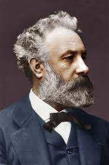
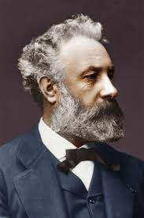

¿QUIEN FUE JULIO VERNE?
fue un escritor, poeta y dramaturgo francés
BIOGRAFIA
Jules Gabriel Verne, conocido en los países hispanohablantes como Julio Verne (Nantes, Reino de Francia, 8 de febrero de 1828-Amiens, Tercera República Francesa, 24 de marzo de 1905), fue un escritor, poeta y dramaturgo francés célebre por sus novelas de aventuras y por su profunda influencia en el género literario de la ciencia ficción.
Los Viajes extraordinarios
En 1859 viaja a Escocia con su amigo Hignard. Su primera obra de ficción científica es también la primera novela que escribió, París en el siglo XX, y una de las pocas que no publicó en vida —se imprimió en 1994. Pierre-Jules Hetzel, su editor, rechazó la novela por el pesimismo que encerraba, pues presagiaba una sociedad en que la gente vive obsesionada con el dinero y con los faxes.
Sus últimos años
Cuando Verne tenía cincuenta y ocho años, en marzo de 1886, tiene lugar un trágico suceso: mientras caminaba de regreso a su casa, su sobrino Gastón, de veinticinco años, con quien mantenía una cordial relación, le disparó con un revólver sin motivaciones claras. La primera bala no da en el blanco, pero la segunda le hirió en la pierna izquierda, provocándole una cojera de la que no se recuperó. El incidente fue ocultado por la prensa y Gastón pasó el resto de su vida internado en un manicomio.
 
